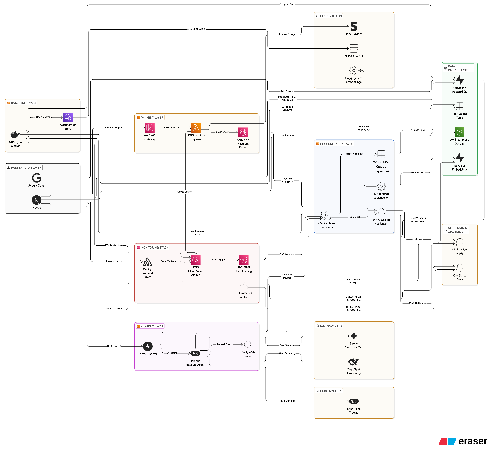

<!doctype html>
<html lang="ja">

<head>
  <meta charset="UTF-8"/>
  <meta name="viewport" content="width=device-width, initial-scale=1.0"/>
  <title>劉 洋 - 職務経歴書</title>
  <style>
    /* ========== CSS变量 ========== */
    :root {
      --primary-color: #333;
      --secondary-color: #666;
      --accent-color: #666700;
      --border-color: #ddd;
      --bg-light: #f8f9fa;
      --bg-dark: #232f3e;

      --font-size-name: 20px;
      --font-size-section: 13px;
      --font-size-title: 11px;
      --font-size-normal: 10px;
      --font-size-small: 9px;
      --font-size-tiny: 8px;

      --spacing-section: 14px;
      --spacing-item: 3px;
    }

    /* ========== 基础样式 ========== */
    @page {
      size: A4;
      margin: 0;
    }

    body {
      font-family: Arial, sans-serif;
      margin: 0;
      padding: 0;
      color: var(--primary-color);
      background-color: #f9f9f9;
      -webkit-print-color-adjust: exact !important;
      print-color-adjust: exact !important;
    }

    .resume-container {
      width: 210mm;
      min-height: 297mm;
      max-height: 297mm;
      margin: 0 auto;
      background-color: white;
      padding: 15mm;
      box-sizing: border-box;
      overflow: hidden;
    }

    .resume-container + .resume-container {
      margin-top: 20px;
    }

    /* ========== Page 1: 头部区域 ========== */
    .header {
      display: flex;
      align-items: center;
      margin-bottom: var(--spacing-section);
    }

    .profile-img {
      width: 100px;
      height: 140px;
      margin-right: 20px;
      border-radius: 4px;
      overflow: hidden;
      flex-shrink: 0;
    }

    .profile-img img {
      width: 100%;
      height: 100%;
      object-fit: cover;
    }

    .header-text h1 {
      font-size: var(--font-size-name);
      margin: 0 0 4px 0;
    }

    .header-title {
      font-size: var(--font-size-title);
      color: var(--secondary-color);
      margin-bottom: 6px;
      font-weight: 500;
    }

    .key-points {
      display: flex;
      gap: 6px;
      margin-bottom: 8px;
      flex-wrap: wrap;
    }

    .key-point {
      font-size: var(--font-size-tiny);
      padding: 2px 8px;
      background: var(--bg-dark);
      color: white;
      border-radius: 10px;
      font-weight: 500;
    }

    .header-text p {
      margin: 3px 0;
      line-height: 1.3;
      font-size: var(--font-size-small);
    }

    /* ========== Page 1: 主体布局（左右分栏） ========== */
    .main-content {
      display: flex;
      margin-top: 10px;
    }

    .left-column {
      width: 30%;
      padding-right: 15px;
    }

    .left-column > div + div {
      margin-top: 14px;
    }

    .right-column {
      width: 70%;
      border-left: 1px solid var(--border-color);
      padding-left: 15px;
    }

    .right-column > div + div {
      margin-top: 14px;
    }

    /* ========== 通用组件: Section Title ========== */
    .section-title {
      font-size: 9px;
      font-weight: 700;
      text-transform: uppercase;
      margin-top: var(--spacing-section);
      margin-bottom: var(--spacing-item);
      padding: 3px 0 3px 8px;
      border-left: 3px solid var(--bg-dark);
      border-bottom: none;
      color: var(--bg-dark);
    }

    .section-title:first-child {
      margin-top: 0;
    }

    /* ========== 联系方式 ========== */
    .contact-item {
      display: flex;
      align-items: center;
      margin-bottom: 3px;
      font-size: var(--font-size-normal);
    }

    .contact-icon {
      width: 15px;
      margin-right: 8px;
      text-align: center;
    }

    /* ========== 技能条 ========== */
    .skill-item {
      margin-bottom: 3px;
    }

    .skill-name {
      font-size: var(--font-size-normal);
      margin-bottom: 3px;
    }

    .skill-bar {
      display: flex;
      gap: 2px;
    }

    .skill-dot {
      width: 10px;
      height: 6px;
      border: 1px solid #999;
    }

    .skill-dot.filled {
      background-color: #999;
    }

    /* ========== 语言能力 ========== */
    .language-item {
      font-size: var(--font-size-normal);
      margin: 3px 0;
    }

    /* ========== 证书徽章 ========== */
    .cert-list {
      list-style: none;
      padding: 0;
      margin: 3px 0 0 0;
    }

    .cert-item {
      display: flex;
      align-items: center;
      margin-bottom: 4px;
      padding: 4px 6px;
      background: var(--bg-light);
      border-radius: 4px;
      border-left: 3px solid #e0e0e0;
    }

    .cert-icon {
      width: 28px;
      height: 28px;
      margin-right: 8px;
      flex-shrink: 0;
    }

    .cert-icon img {
      width: 100%;
      height: 100%;
      object-fit: contain;
    }

    .cert-name {
      font-size: var(--font-size-small);
      font-weight: 600;
      color: var(--bg-dark);
    }

    .cert-date {
      font-size: var(--font-size-tiny);
      color: var(--secondary-color);
    }

    /* ========== Page 1: AWS Services ========== */
    .aws-services {
      display: flex;
      flex-wrap: wrap;
      gap: 3px;
      margin-top: 3px;
    }

    .aws-service-tag {
      font-size: 7px;
      padding: 2px 5px;
      background: #ff9900;
      color: white;
      border-radius: 2px;
      font-weight: 600;
    }

    /* ========== Page 1: Featured Project ========== */
    .featured-project {
      padding: 8px 10px;
      background: var(--bg-light);
      border-radius: 4px;
      border-left: 3px solid #e0e0e0;
      margin-top: 4px;
    }

    .featured-project-name {
      font-size: var(--font-size-normal);
      font-weight: bold;
      margin-bottom: 4px;
    }

    .featured-project-desc {
      font-size: var(--font-size-small);
      line-height: 1.5;
      color: var(--primary-color);
      margin-bottom: 4px;
    }

    .featured-project-arch {
      font-size: var(--font-size-tiny);
      color: var(--secondary-color);
      line-height: 1.4;
    }

    .featured-project-purpose {
      font-size: var(--font-size-tiny);
      color: var(--secondary-color);
      margin-bottom: 4px;
      font-style: italic;
    }

    .featured-project-plan {
      font-size: var(--font-size-tiny);
      color: var(--secondary-color);
      margin-top: 3px;
    }

    .featured-project-note {
      font-size: 7px;
      color: var(--secondary-color);
      margin-top: 4px;
      font-style: italic;
    }

    .other-projects-list {
      font-size: var(--font-size-small);
      color: var(--secondary-color);
      line-height: 1.6;
    }

    /* ========== Page 1: 活かせる経験 ========== */
    .strength-item {
      position: relative;
      padding-left: 10px;
      margin: 3px 0;
      font-size: var(--font-size-small);
      line-height: 1.5;
      color: var(--primary-color);
    }

    .strength-item::before {
      content: "▸";
      position: absolute;
      left: 0;
      color: var(--accent-color);
      font-size: 8px;
    }

    /* ========== Page 1: 职历概要 ========== */
    .career-summary-item {
      margin-bottom: 10px;
      padding: 8px 10px;
      background: var(--bg-light);
      border-radius: 4px;
      border-left: 3px solid #e0e0e0;
    }

    .career-company-line {
      display: flex;
      justify-content: space-between;
      align-items: center;
      margin-bottom: 6px;
    }

    .career-company-name {
      font-size: var(--font-size-title);
      font-weight: bold;
    }

    .career-company-period {
      font-size: var(--font-size-tiny);
      color: var(--secondary-color);
      background: white;
      padding: 1px 8px;
      border-radius: 10px;
    }

    .career-project-list {
      padding: 0;
      margin: 0;
    }

    .career-project-item {
      padding: 4px 0;
      font-size: var(--font-size-small);
      border-bottom: 1px dotted #e0e0e0;
    }

    .career-project-item:last-child {
      border-bottom: none;
    }

    .career-project-top {
      display: flex;
      align-items: center;
      gap: 8px;
    }

    .career-project-client {
      font-weight: bold;
      min-width: 120px;
      flex-shrink: 0;
    }

    .career-project-role {
      font-size: var(--font-size-tiny);
      padding: 1px 6px;
      background: linear-gradient(135deg, #667eea 0%, #764ba2 100%);
      color: white;
      border-radius: 3px;
      font-weight: 600;
      white-space: nowrap;
    }

    .career-project-period {
      font-size: var(--font-size-tiny);
      color: var(--secondary-color);
      margin-left: auto;
      white-space: nowrap;
    }

    .career-project-desc {
      font-size: var(--font-size-tiny);
      color: var(--secondary-color);
      padding-left: 4px;
      margin-top: 2px;
      line-height: 1.4;
    }

    /* ========== 个人项目（简洁版） ========== */
    .personal-project {
      margin-bottom: 5px;
      padding: 2px 0;
    }

    .personal-project-line {
      display: flex;
      align-items: baseline;
      gap: 6px;
      font-size: var(--font-size-small);
    }

    .personal-project-name {
      font-weight: bold;
      color: var(--primary-color);
      flex-shrink: 0;
    }

    .personal-project-desc {
      color: var(--secondary-color);
      font-size: var(--font-size-tiny);
    }

    .personal-project-tech {
      display: flex;
      flex-wrap: wrap;
      gap: 3px;
      margin-top: 2px;
      padding-left: 2px;
    }

    .personal-project-tech .tech-tag {
      font-size: 7px;
      padding: 1px 4px;
      border-radius: 2px;
      background: #e0e0e0;
      color: var(--primary-color);
    }

    /* ========== 教育背景 ========== */
    .edu-item h3 {
      font-size: var(--font-size-title);
      margin: 0 0 3px 0;
    }

    .edu-item p {
      font-size: var(--font-size-normal);
      margin: 2px 0;
    }

    /* ========== Page 2: 迷你头部 ========== */
    .page2-header {
      display: flex;
      justify-content: space-between;
      align-items: center;
      padding-bottom: 8px;
      border-bottom: 2px solid var(--bg-dark);
      margin-bottom: 15px;
    }

    .page2-name {
      font-size: var(--font-size-section);
      font-weight: bold;
    }

    .page2-indicator {
      font-size: var(--font-size-tiny);
      color: var(--secondary-color);
    }

    /* ========== Page 2: 项目详细（全宽） ========== */
    .exp-company {
      font-size: var(--font-size-title);
      font-weight: bold;
      margin: 0 0 3px 0;
      padding-left: 10px;
      border-left: 3px solid var(--bg-dark);
    }

    .project-card {
      margin-bottom: 14px;
      padding: 8px 12px;
      background: linear-gradient(to right, #fafafa, #fff);
      border-radius: 4px;
      border-left: 2px solid #e0e0e0;
    }

    .project-header {
      display: flex;
      justify-content: space-between;
      align-items: center;
      margin-bottom: 5px;
    }

    .project-client {
      font-size: var(--font-size-title);
      font-weight: bold;
      color: var(--primary-color);
    }

    .project-period {
      font-size: var(--font-size-tiny);
      color: var(--secondary-color);
      background: var(--bg-light);
      padding: 1px 6px;
      border-radius: 10px;
    }

    .project-meta {
      display: flex;
      align-items: center;
      gap: 8px;
      margin-bottom: 6px;
      flex-wrap: wrap;
    }

    .role-badge {
      font-size: var(--font-size-tiny);
      padding: 2px 8px;
      background: linear-gradient(135deg, #667eea 0%, #764ba2 100%);
      color: white;
      border-radius: 3px;
      font-weight: 600;
    }

    .team-size {
      font-size: var(--font-size-tiny);
      color: var(--secondary-color);
      border: 1px solid var(--border-color);
      padding: 1px 6px;
      border-radius: 3px;
    }

    .phase-tag {
      font-size: 7px;
      padding: 1px 5px;
      background: #e8eaf6;
      color: #3949ab;
      border-radius: 2px;
      font-weight: 600;
    }

    /* 三段式内容 */
    .project-section {
      margin-bottom: 5px;
    }

    .project-label {
      font-size: var(--font-size-tiny);
      font-weight: bold;
      color: var(--accent-color);
      text-transform: uppercase;
      letter-spacing: 0.5px;
      margin-bottom: 2px;
    }

    .project-content {
      font-size: var(--font-size-small);
      line-height: 1.5;
      color: var(--primary-color);
      padding-left: 8px;
    }

    /* 亮点列表 */
    .highlight-item {
      position: relative;
      padding-left: 10px;
      margin: 2px 0;
    }

    .highlight-item::before {
      content: "▸";
      position: absolute;
      left: 0;
      color: var(--accent-color);
      font-size: 8px;
    }

    /* 技术标签 */
    .tech-stack {
      display: flex;
      flex-wrap: wrap;
      gap: 3px;
      padding-left: 8px;
    }

    .tech-tag {
      display: inline-block;
      font-size: var(--font-size-tiny);
      padding: 1px 5px;
      border-radius: 3px;
      background: var(--bg-dark);
      color: white;
    }

    .tech-tag.lang {
      background: #3572a5;
    }

    .tech-tag.fw {
      background: #6db33f;
    }

    .tech-tag.db {
      background: #336791;
    }

    .tech-tag.cloud {
      background: #ff9900;
    }

    /* ========== 打印优化 ========== */
    @media print {

      html,
      body {
        width: 210mm;
        margin: 0;
        padding: 0;
        background-color: white;
      }

      .resume-container {
        width: 210mm;
        height: 297mm;
        margin: 0;
        padding: 15mm;
        box-shadow: none;
        overflow: hidden;
        page-break-after: always;
      }

      .resume-container:last-child {
        page-break-after: avoid;
      }

      .resume-container + .resume-container {
        margin-top: 0;
      }

      .project-card,
      .cert-item,
      .edu-item,
      .personal-project {
        page-break-inside: avoid;
      }
    }
  </style>
  <script src="https://cdn.jsdelivr.net/gh/davidshimjs/qrcodejs/qrcode.min.js"></script>
</head>

<body>
<!-- Page 1 -->
<div class="resume-container" id="page1"></div>
<!-- Page 2 -->
<div class="resume-container" id="page2"></div>
<!-- Page 3: Prior Experience + Architecture Diagram -->
<div class="resume-container" id="page3"></div>

<script>
  // ================================================================
  // 简历数据
  // ================================================================
  const resumeData = {
    profile: {
      name: "劉 洋",
      photo: "profile-photo.jpg",
      title: "Technical Lead | Systems Architecture / Java / AWS",
      keyPoints: [
        "13年システム設計・開発",
        "既存解析→本番化",
        "0→1 単独推進",
        "AWS認定4資格",
        "AI活用",
      ],
      summary: [
        "複雑な既存基幹システムの制約を踏まえ、現実的に実装・運用可能な再構築方針を立案し、システムアーキテクチャへ落とし込んできた技術責任者。既存解析、技術選定、設計・実装、本番リリース、運用定着まで一貫して担当してきた。",
        "Java / Springを軸に、API・Batch・データ連携・DB設計・クラウド活用まで横断対応が可能。要件が複雑で制約の多い業務システムでも、少人数体制で0→1の新規構築や継続改善を自走して推進できることを強みとする。",
      ],
    },

    contact: [
      {icon: "📍", text: "東京都江東区南砂"},
      {icon: "🪪", text: "在留資格：永住者（就労制限なし）"},
      {icon: "📱", text: "070-4813-4977"},
      {icon: "✉️", text: "liuyang19900520@hotmail.com"},
      {icon: "🌏", text: "liuyang19900520.com"},
    ],

    skills: [
      {name: "Java / Spring Ecosystem", level: 5},
      {name: "API / Batch / External Integration", level: 5},
      {name: "AWS Cloud（認定4資格）", level: 4},
      {name: "RDB設計・SQL最適化", level: 4},
      {name: "React / Next.js / TypeScript", level: 4},
      {name: "Python / AI活用", level: 3},
    ],

    languages: [
      {name: "Japanese", detail: "日本語能力試験 N1（2012.7）"},
      {name: "English", detail: "TOEIC 785（2024.11）"},
    ],

    certifications: [
      {
        name: "Solutions Architect - Associate",
        date: "2022.7",
        icon: "aws-certified-solutions-architect-associate.png",
      },
      {
        name: "Developer - Associate",
        date: "2023.1",
        icon: "aws-certified-developer-associate.png",
      },
      {
        name: "Solutions Architect - Professional",
        date: "2025.2",
        icon: "aws-certified-solutions-architect-professional.png",
      },
      {
        name: "DevOps Engineer - Professional",
        date: "2025.12",
        icon: "aws-certified-devops-engineer-professional.png",
      },
    ],

    // AWS実務経験サービス
    awsServices: [
      "Lambda", "SQS", "SNS", "Aurora", "DynamoDB",
      "S3", "Amplify", "API Gateway", "EC2", "VPC", "ELB", "Route53",
    ],

    // Featured Project
    featuredProject: {
      name: "個人サイト / 代表作ポートフォリオ",
      purpose: "個人サイト上で履歴書・技術Blog・個人開発物を公開し、代表作としてNBA予測Webアプリを継続開発",
      desc: "個人サイトを作品導線として運用し、代表作としてNBA予測Webアプリを公開。技術選定・設計・実装・公開運用までの対応力を示す補足資料として活用。",
      tech: {
        fe: ["Next.js 15", "Supabase"],
        ai: ["LangGraph", "pgvector"],
        infra: ["AWS Lambda/EC2", "Terraform", "Vercel"],
        other: ["GitHub Actions"],
      },
      note: "※ 個人サイトURL・代表作の構成図・公開URLはAppendix参照",
    },

    // Page 1 右栏: 活かせる経験・スキル
    strengths: [
      "複雑な既存業務・システム制約を整理し、現実的な再構築方針と実装方式へ落とし込める",
      "単独または少人数体制でも、0→1の新規構築から本番化まで自走して推進できる",
      "生成AI×Cloudの個人プロダクトを継続開発・公開し、技術検証を継続している",
    ],

    // ================================================================
    // 工作经历
    // ================================================================
    experience: [
      {
        company: "株式会社キーサイエンス／日本",
        role: "テクニカルアーキテクト",
        period: "2017.8 ~ 現在",
        notes: [],
        projects: [
          {
            client: "JAL（日本航空）— 営業・経営支援基幹システム",
            clientShort: "JAL（日本航空）",
            period: "2021.11〜現在",
            role: "Tech Lead",
            teamSize: "構築期15名→現在6名",
            phases: ["既存解析", "技術選定", "基本設計", "詳細設計", "実装", "テスト", "運用保守"],
            summaryDesc: "既存システム解析から業務アーキテクチャ提案、新規構築、本番定着化まで主導。現在も少数体制で継続開発・運用改善を推進",
            task: "航空券の営業施策・価格管理・審査など複数サブシステムを新規構築。既存システム解析・業務アーキテクチャ提案から、DB設計・実装・本番リリース・運用まで一貫して担当。構築フェーズ（〜2023.6 / 15名体制）完了後は、マネージャー1名＋自分＋新人4名の体制で継続的な機能追加・運用改善を推進中",
            highlights: [
              "【アーキテクチャ提案】既存システム解析を基にシステムアーキテクチャを設計。Spring Boot（画面）、Spring Batch＋Stored Procedure（大量データ処理）、Shell（ファイル連携）で責務を分離し、データ移動を最小化。",
              "【データ同期・ライフサイクル管理】1億件データ照合のボトルネックに対し、パーティション分割したシャドウテーブルをバッチ生成する方式を設計・実装。照合処理時間を約4時間から35分へ短縮し、複数施策の並行審査を安定化。定期パージでDB肥大化も防止。",
              "【AWS活用】S3→Python Lambda→Spring Batchのイベント駆動パイプラインでシミュレーションExcelの自動検証・入庫を実現。CloudWatch＋SNSで監視・アラートを自動化。",
              "【SSO】Spring Security＋SAMLで社内認証基盤とSSO連携。複数サブシステム間のセッション統合・ロールベース権限制御を一元管理。",
              "【体制移行】構築期（15名）から運用期（6名）への移行を推進。新人4名への技術指導、設計レビュー、障害対応方針の整理を担い、少人数でも開発継続できる体制づくりに貢献。",
            ],
            tech: {
              fw: ["Spring Boot", "Spring Batch", "Shell"],
              db: ["Aurora PostgreSQL", "Stored Procedure"],
              cloud: ["AWS S3", "Lambda", "EventBridge", "SNS", "CloudWatch"],
            },
          },
          {
            client: "YAMATO（ヤマト運輸）— 集荷・決済システム",
            clientShort: "YAMATO（ヤマト運輸）",
            period: "2019.6〜2021.10",
            role: "SE",
            teamSize: "全体15名",
            phases: ["基本設計", "詳細設計", "実装", "テスト", "リリース"],
            summaryDesc: "決済・認証・集荷業務ロジックを担うアプリケーション層の主担当として、設計からリリースまで対応",
            task: "物流集荷・決済システムにおいて、PayPay決済API統合、OTP二要素認証、上門集荷業務ロジックの設計から開発・テスト・リリースまでを担当。外部IFの組み込みと既存業務フローへの整合を重視して実装を推進し、自社新人の技術指導も兼務",
            highlights: [
              "【PayPay決済API統合】既存決済フローとの整合を保ちながらPayPay APIを組み込み、決済リクエスト・コールバック・返金まで一連の処理を実装。既存画面や周辺機能への影響を抑えた形で新規決済手段を追加。",
              "【OTP二要素認証】セキュリティ強化として、Spring SecurityベースのOTP認証を導入。OTP生成・検証・有効期限管理を実装し、認証強化と業務運用の両立を実現。",
              "【業務ロジック実装・育成】上門集荷に関わる業務ロジックの設計・実装を担当しつつ、自社新人に対して設計レビュー・コードレビューを通じた技術指導を実施。",
            ],
            tech: {
              fw: ["Spring Boot", "Spring Security", "Shell"],
              db: ["PostgreSQL", "Stored Procedure"],
              cloud: ["Azure"],
            },
          },
          {
            client: "AEON（イオン）— 無人レジ「レジGO」",
            clientShort: "AEON（イオン）",
            period: "2017.8〜2019.5",
            role: "Tech Lead",
            teamSize: "5名",
            phases: ["技術選定", "基本設計", "詳細設計", "実装", "テスト", "運用保守"],
            summaryDesc: "セルフレジ「レジGO」のAPI基盤をゼロから設計・構築。非同期メッセージングを含むBackend基盤の立ち上げを担当",
            task: "セルフレジシステム「レジGO」のバックエンドAPI基盤をゼロから設計・開発。商品・在庫・会員・注文APIに加え、販促用Batchシステムや非同期連携基盤も構築",
            highlights: [
              "【技術選定・0→1開発】プロジェクト唯一のバックエンドエンジニアとして、REST API基盤（商品・在庫・会員・注文）の技術選定から詳細設計・実装までを完遂。マイクロサービス指向の疎結合設計を採用し、以後の機能追加に耐えうる土台を整備。",
              "【非同期メッセージング基盤】顧客が支払い操作を行うと、注文内容をSQSキューに投入し、レジ担当者のPad端末へSNSで検品通知をプッシュする仕組みを設計・実装。精算機6台に対して多数の顧客が同時決済する状況でも、SQSによるバッファリングで流量制御を実現し、精算待ち行列の安定化とシステム過負荷の防止を両立。",
              "【パフォーマンス最適化】Redisによる商品マスタキャッシュとセッション管理を実装。店舗端末からの頻繁な在庫照会リクエストに対し、低レイテンシな応答性能を確保。",
              "【ドキュメント文化醸成】OpenAPI (Swagger) によるAPI仕様書管理を導入。フロントエンドチームとの並行開発を加速させ、後任エンジニアへのスムーズな引き継ぎ体制を構築。",
              "【マルチ店舗展開】サービスイン後10店舗以上への段階的展開を支援し、安定稼働を実現。店舗ごとの設定差異を吸収する柔軟なAPI設計により、新規店舗追加の工数を最小化。",
            ],
            tech: {
              fw: ["Spring Boot", "NestJS", "Vue2.x"],
              db: ["Mysql", "Redis"],
              cloud: ["AWS SQS", "AWS SNS"],
            },
          },
        ],
      },
      {
        company: "スナオ株式会社／中国",
        role: "システムエンジニア",
        period: "2013.6 ~ 2017.5",
        notes: [],
        projects: [

          {
            client: "欧亜E購 — Dubbo分散型ECプラットフォーム",
            clientShort: "欧亜E購（ECサイト）",
            period: "2016.7〜2017.5",
            role: "TL",
            teamSize: "12名",
            phases: ["要件分析", "技術選定", "基本設計", "詳細設計", "実装", "テスト", "リリース"],
            shortDesc: "Dubbo/ZookeeperによるSOA基盤をゼロから設計。複数サービス構成の分散型ECプラットフォームを構築",
            summaryDesc: "Dubbo RPC＋ZookeeperによるSOA基盤をゼロから構築。商品・注文・検索・決済・認証をサービス分割し、独立デプロイ可能な構成を実現。SolrCloudによる全文検索、Redis Clusterによる分散セッション管理、ActiveMQによる非同期処理基盤を構築した。",
            task: "ショッピングモール向けのオンライン購買プラットフォーム「欧亜E購」の新規構築。TLとして要件分析、技術選定、基本設計、開発推進を担当し、商品管理・注文処理・全文検索・決済連携・認証などのコアサービス実装をリード",
            highlights: [
              "【開発リード】12名体制のTLとして要件分析、WBS作成、進捗管理、設計レビューを担当。技術面と開発推進の両面からプロジェクトを主導。",
              "【SOAアーキテクチャ設計】Dubbo＋ZookeeperによるSOA基盤を構築し、商品・注文・検索・決済・認証などの機能をサービス分割。疎結合かつ独立デプロイ可能な構成を実現。",
              "【検索・キャッシュ基盤】SolrCloudによる100万件超の商品検索基盤を構築。Redis Clusterによる分散セッション管理とキャッシュ戦略を導入し、検索・参照性能を改善。",
              "【非同期処理・外部連携】ActiveMQを用いた非同期連携と注文タイムアウト制御を実装し、決済・注文処理の安定化を実現。",
            ],
            tech: {
              fw: ["Dubbo", "Zookeeper", "Spring"],
              db: ["MySQL", "Redis", "SolrCloud", "FastDFS"],
              cloud: ["ActiveMQ", "Nginx"],
            },
          },
          {
            client: "中国第一自動車集団（中国一汽）— EV車両IoTプラットフォーム",
            clientShort: "中国第一自動車集団",
            period: "2014.6〜2016.6",
            role: "PG→SE",
            teamSize: "10名",
            phases: ["要件分析", "基本設計", "詳細設計", "実装", "テスト"],
            shortDesc: "EV車両IoTデータ収集・可視化プラットフォームの設計・開発を担当",
            summaryDesc: "リアルタイムデータ（GPS・バッテリー・走行ログ）の収集・蓄積パイプラインを設計・実装。監視・分析向けの業務システム開発。",
            task: "中国最大手自動車メーカー向けに、EV車両のリアルタイムデータ収集・監視・分析プラットフォームを設計・開発",
            highlights: [
              "【IoTデータ基盤】車両から送信されるリアルタイムデータ（GPS・バッテリー・走行ログ）の収集・蓄積パイプラインを設計。大量のセンサーデータを効率的に処理するバッチプログラムを実装。",
            ],
            tech: {
              fw: ["Struts2", "Spring", "Quartz", "Netty"],
              db: ["Oracle",],
            },
          },
          {
            client: "政府系 — 業務管理Webシステム",
            clientShort: "政府系プロジェクト",
            period: "2013.6〜2014.5",
            role: "PG",
            teamSize: "8名",
            phases: ["詳細設計", "実装", "テスト"],
            shortDesc: "新人開発段階、詳細略",
            summaryDesc: "新人開発段階につき詳細略",
            task: "地方政府向けの業務管理Webシステムの開発に参画。帳票出力・ワークフロー・権限管理等の業務機能を担当",
            highlights: [
              "帳票出力・ワークフロー承認・権限管理などの業務機能の詳細設計・実装を担当",
              "Java Webエンジニアとしてのキャリアをスタートし、Spring/MyBatis等の基礎技術を習得",
            ],
            tech: {
              fw: ["Spring"],
            },
          },
        ],
      },
    ],

    education: [
      {
        period: "2009.9 ~ 2013.6",
        school: "東北師範大学人文学部",
        major: "日本語",
      },
    ],

  };

  // ================================================================
  // Page 1: 概要ページ
  // ================================================================
  function renderPage1() {
    return `
          ${renderHeader()}
          <div class="main-content">
            <div class="left-column">
              ${renderContact()}
              ${renderSkills()}
              ${renderCertifications()}
              ${renderLanguages()}
            </div>
            <div class="right-column">
              ${renderStrengths()}
              ${renderCareerSummary()}
              ${renderFeaturedProject()}
              ${renderEducation()}
            </div>
          </div>
        `;
  }

  // ================================================================
  // Page 2: 職務経歴 詳細ページ
  // ================================================================
  function renderPage2() {
    return `
          ${renderPage2Header()}
          ${renderExperienceDetail()}
        `;
  }

  // ========== Page 1 组件 ==========

  function renderHeader() {
    const {name, photo, title, keyPoints, summary} = resumeData.profile;
    return `
          <div class="header">
            <div class="profile-img">
              
            </div>
            <div class="header-text">
              <h1>${name}</h1>
              <div class="header-title">${title || ""}</div>
              ${keyPoints
      ? `
                <div class="key-points">
                  ${keyPoints.map((k) => `<span class="key-point">${k}</span>`).join("")}
                </div>
              `
      : ""
    }
              ${summary.map((p) => `<p>${p}</p>`).join("")}
            </div>
          </div>
        `;
  }

  function renderContact() {
    return `
          <div class="contact-info">
            <div class="section-title">CONTACT</div>
            ${resumeData.contact
      .map(
        (c) => `
              <div class="contact-item">
                <span class="contact-icon">${c.icon}</span>
                <span>${c.text}</span>
              </div>
            `,
      )
      .join("")}
          </div>
        `;
  }

  function renderSkills() {
    return `
          <div class="skills">
            <div class="section-title">SKILLS</div>
            ${resumeData.skills
      .map(
        (s) => `
              <div class="skill-item">
                <div class="skill-name">${s.name}</div>
                <div class="skill-bar">
                  ${[1, 2, 3, 4, 5].map((i) => `<div class="skill-dot ${i <= s.level ? "filled" : ""}"></div>`).join("")}
                </div>
              </div>
            `,
      )
      .join("")}
          </div>
        `;
  }

  function renderLanguages() {
    return `
          <div class="languages">
            <div class="section-title">LANGUAGES</div>
            ${resumeData.languages
      .map(
        (l) => `
              <p class="language-item"><strong>${l.name}:</strong> ${l.detail}</p>
            `,
      )
      .join("")}
          </div>
        `;
  }

  function renderCertifications() {
    return `
          <div class="certifications">
            <div class="section-title">CERTIFICATIONS</div>
            <ul class="cert-list">
              ${resumeData.certifications
      .map(
        (c) => `
                <li class="cert-item">
                  <div class="cert-icon"></div>
                  <div class="cert-text">
                    <div class="cert-name">${c.name}</div>
                    <div class="cert-date">${c.date}</div>
                  </div>
                </li>
              `,
      )
      .join("")}
            </ul>
          </div>
        `;
  }

  function renderEducation() {
    return `
          <div class="education">
            <div class="section-title">EDUCATION</div>
            ${resumeData.education
      .map(
        (edu) => `
              <div class="edu-item">
                <h3>${edu.period}</h3>
                <p>${edu.major}　${edu.school}</p>
              </div>
            `,
      )
      .join("")}
          </div>
        `;
  }

  function renderStrengths() {
    if (!resumeData.strengths || resumeData.strengths.length === 0) {
      return '';
    }
    return `
          <div class="strengths">
            <div class="section-title">KEY QUALIFICATIONS</div>
            ${resumeData.strengths
      .map(
        (s) => `
              <div class="strength-item">${s}</div>
            `,
      )
      .join("")}
          </div>
        `;
  }

  function renderCareerSummary() {
    return `
          <div class="career-summary">
            <div class="section-title">CAREER SUMMARY</div>
            ${resumeData.experience
      .map(
        (exp) => `
              <div class="career-summary-item">
                <div class="career-company-line">
                  <span class="career-company-name">${exp.company}</span>
                  <span class="career-company-period">${exp.period}</span>
                </div>
                <div class="career-project-list">
                  ${exp.projects
          .map(
            (proj) => `
                    <div class="career-project-item">
                      <div class="career-project-top">
                        <span class="career-project-client">${proj.clientShort || proj.client.split("—")[0].trim()}</span>
                        ${proj.role ? `<span class="career-project-role">${proj.role}</span>` : ""}
                        <span class="career-project-period">${proj.period}</span>
                      </div>
                      ${(proj.shortDesc || proj.summaryDesc) ? `<div class="career-project-desc">${proj.shortDesc || proj.summaryDesc}</div>` : ""}
                    </div>
                  `,
          )
          .join("")}
                </div>
              </div>
            `,
      )
      .join("")}
          </div>
        `;
  }

  function renderAwsServices() {
    if (!resumeData.awsServices || resumeData.awsServices.length === 0) {
      return '';
    }
    return `
          <div class="aws-experience">
            <div class="section-title">AWS Services</div>
            <div class="aws-services">
              ${resumeData.awsServices.map((s) => `<span class="aws-service-tag">${s}</span>`).join("")}
            </div>
          </div>
        `;
  }

  function renderFeaturedProject() {
    const fp = resumeData.featuredProject;
    if (!fp) return '';
    return `
          <div class="featured-proj">
            <div class="section-title">PORTFOLIO</div>
            <div class="project-card">
              <div class="project-header">
                <span class="project-client">${fp.name}</span>
              </div>
              <div class="project-meta">
                <span class="featured-project-purpose">${fp.purpose}</span>
              </div>
              <div class="project-section">
                <div class="project-label">位置づけ</div>
                <div class="project-content">${fp.desc}</div>
              </div>
              <div class="project-section">
                <div class="project-label">使用技術</div>
                <div class="tech-stack">
                  ${fp.tech.fe.map((t) => `<span class="tech-tag lang">${t}</span>`).join("")}
                  ${fp.tech.ai.map((t) => `<span class="tech-tag fw">${t}</span>`).join("")}
                  ${fp.tech.infra.map((t) => `<span class="tech-tag cloud">${t}</span>`).join("")}
                  ${fp.tech.other.map((t) => `<span class="tech-tag db">${t}</span>`).join("")}
                </div>
              </div>
              ${fp.plan ? `
              <div class="project-section">
                <div class="project-label">今後の展望</div>
                <div class="project-content">${fp.plan}</div>
              </div>` : ""}
              ${fp.note ? `<div class="featured-project-note">${fp.note}</div>` : ""}
            </div>
          </div>
        `;
  }

  // ========== Page 2 组件 ==========

  function renderPage2Header() {
    return `
          <div class="page2-header">
            <span class="page2-name">${resumeData.profile.name}　—　職務経歴 詳細</span>
            <span class="page2-indicator">Page 2 / 3</span>
          </div>
        `;
  }

  function renderTechStack(tech) {
    if (!tech || Object.keys(tech).length === 0) return "";
    return `
        <div class="project-section">
          <div class="project-label">技術スタック</div>
          <div class="tech-stack">
            ${(tech.fw || []).map((t) => `<span class="tech-tag fw">${t}</span>`).join("")}
            ${(tech.db || []).map((t) => `<span class="tech-tag db">${t}</span>`).join("")}
            ${(tech.cloud || []).map((t) => `<span class="tech-tag cloud">${t}</span>`).join("")}
          </div>
        </div>`;
  }

  function renderProjectFull(proj) {
    return `
        <div class="project-card">
          <div class="project-header">
            <span class="project-client">${proj.client}</span>
            <span class="project-period">${proj.period}</span>
          </div>
          <div class="project-meta">
            ${proj.role ? `<span class="role-badge">${proj.role}</span>` : ""}
            ${proj.teamSize ? `<span class="team-size">チーム${proj.teamSize}</span>` : ""}
            ${(proj.phases || []).map((p) => `<span class="phase-tag">${p}</span>`).join("")}
          </div>
          <div class="project-section">
            <div class="project-label">担当</div>
            <div class="project-content">${proj.task}</div>
          </div>
          <div class="project-section">
            <div class="project-label">成果・ポイント</div>
            <div class="project-content">
              ${proj.highlights.map((h) => `<div class="highlight-item">${h}</div>`).join("")}
            </div>
          </div>
          ${renderTechStack(proj.tech)}
        </div>`;
  }

  function renderProjectBrief(proj) {
    return `
        <div class="project-card">
          <div class="project-header">
            <span class="project-client">${proj.client}</span>
            <span class="project-period">${proj.period}</span>
          </div>
          <div class="project-meta">
            ${proj.role ? `<span class="role-badge">${proj.role}</span>` : ""}
            ${proj.teamSize ? `<span class="team-size">チーム${proj.teamSize}</span>` : ""}
            ${(proj.phases || []).map((p) => `<span class="phase-tag">${p}</span>`).join("")}
          </div>
          <div class="project-section">
            <div class="project-label">概要</div>
            <div class="project-content">${proj.summaryDesc}</div>
          </div>
          ${renderTechStack(proj.tech)}
        </div>`;
  }

  function renderExperienceDetail() {
    const exp = resumeData.experience[0]; // キーサイエンスのみ
    return `
          <div class="experience">
            <div class="exp-item">
              <h3 class="exp-company">${exp.company} (${exp.period})</h3>
              ${exp.projects.map((proj) =>
      proj.brief ? renderProjectBrief(proj) : renderProjectFull(proj)
    ).join("")}
            </div>
          </div>
        `;
  }

  function renderPage3() {
    const snao = resumeData.experience[1];
    return `
        <div class="page2-header">
          <span class="page2-name">劉 洋　—　Appendix</span>
          <span class="page2-indicator">Page 3 / 3</span>
        </div>

        <!-- 中国案件：コンパクトリスト -->
        <div style="margin-bottom:4mm;">
          <h3 class="exp-company" style="margin-bottom:3mm;">${snao.company} (${snao.period})</h3>
          ${snao.projects.map((proj, i) => `
            <div style="padding:4px 0 6px; border-bottom:1px solid var(--border-color);">
              <div style="display:flex; align-items:center; justify-content:space-between; margin-bottom:2px;">
                <div style="display:flex; align-items:center; gap:6px;">
                  <span style="font-weight:600; font-size:9pt;">${proj.clientShort || proj.client.split('—')[0].trim()}</span>
                  ${proj.role ? `<span class="role-badge">${proj.role}</span>` : ''}
                </div>
                <span style="font-size:8pt; color:var(--secondary-color);">${proj.period}</span>
              </div>
              <div style="font-size:8.5pt; line-height:1.5; margin-bottom:3px;">${proj.summaryDesc}</div>
              ${i < 2 ? `<div class="tech-stack">
                ${(proj.tech.fw || []).map(t => `<span class="tech-tag fw">${t}</span>`).join('')}
                ${(proj.tech.db || []).map(t => `<span class="tech-tag db">${t}</span>`).join('')}
                ${(proj.tech.cloud || []).map(t => `<span class="tech-tag cloud">${t}</span>`).join('')}
              </div>` : ''}
            </div>
          `).join('')}
        </div>

        <div class="section-title" style="margin-bottom:3mm;">Representative Portfolio</div>
        <div style="border:1px solid var(--border-color); border-radius:4px; padding:4mm; background:#fafafa; margin-bottom:3mm;">
          <div style="display:flex; justify-content:space-between; align-items:flex-start; gap:6mm;">
            <div style="flex:1;">
              <div style="font-size:10pt; font-weight:600; color:var(--primary-color); margin-bottom:2mm;">NBA Prediction Web App</div>
              <div style="font-size:8.5pt; line-height:1.5; color:var(--secondary-color); margin-bottom:2mm;">
                生成AI・Cloudを活用した個人開発の代表作。詳細な技術構成は下図参照。
              </div>
              <div style="font-size:8pt; color:var(--secondary-color); word-break:break-all;">
                https://nba-game.liuyang19900520.com/lineup
              </div>
            </div>
            <div style="width:24mm; display:flex; justify-content:center;">
              <div id="resume-qr"></div>
            </div>
          </div>
        </div>

        <div style="width:100%; border:1px solid var(--border-color); border-radius:4px; overflow:hidden; background:#fafafa;">
          
        </div>
      `;
  }

  // ================================================================
  // 移动端等比缩放
  // ================================================================
  function applyMobileScaling() {
    const containers = document.querySelectorAll('.resume-container');
    // 210mm ≈ 794px (at 96dpi)
    const containerNaturalWidth = 794;
    const viewportWidth = window.innerWidth;

    if (viewportWidth < containerNaturalWidth) {
      const scale = viewportWidth / containerNaturalWidth;
      containers.forEach(container => {
        container.style.zoom = scale;
      });
      document.body.style.backgroundColor = 'white';
    } else {
      containers.forEach(container => {
        container.style.zoom = '';
      });
      document.body.style.backgroundColor = '';
    }
  }

  // ================================================================
  // 渲染
  // ================================================================
  document.addEventListener("DOMContentLoaded", () => {
    document.getElementById("page1").innerHTML = renderPage1();
    document.getElementById("page2").innerHTML = renderPage2();
    document.getElementById("page3").innerHTML = renderPage3();
    new QRCode(document.getElementById("resume-qr"), {
      text: "https://nba-game.liuyang19900520.com/lineup",
      width: 64,
      height: 64,
      colorDark: "#333333",
      colorLight: "#ffffff",
    });

    // 初始化缩放
    applyMobileScaling();
  });

  // 窗口resize时重新计算
  window.addEventListener('resize', applyMobileScaling);

  // 打印时恢复原始尺寸
  window.addEventListener('beforeprint', () => {
    document.querySelectorAll('.resume-container').forEach(c => {
      c.style.zoom = '';
    });
  });
  window.addEventListener('afterprint', () => {
    applyMobileScaling();
  });
</script>
</body>

</html>
